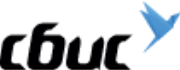

Мои работы

Это первое, что я сделал в своей жизни с тех пор, как увлекся версткой.
Это мой первый опыт! На этих страницах (кроме "Главной" можной перейти на "Гостиницы") вы не встретите адаптивной верстки, только статика и десктоп!
Разметка написана без методологии БЭМ, инструменты сборки отсутствуют. Однако попробуйте сломать верстку контентом! Едва ли что то получится! Она очень надежная! Кроме этого, все интерактивные элементы выполнены с соблюдением принципа доступности интерфейса, оптимизирована графика, реализованы кастомные элементы форм. Отличное начало!
Это мой первый проект в рамках обучения в HTML Academy. Он получил высокую оценку моего наставника. Для себя отметил, что процесс верстки меня увлекает. Кажется на этом этапе у меня промелькнула мысль, что из праздного интереса это может вылиться в нечто большее.
- 
Моя вторая работа. Нашел тестовое задание в сети и выполнил верстку сайта.
Попытка самостоятельно изучть БЭМ и адаптивную верстку, в целом считаю получилось достаточно не плохо.
При верстке учтены те основные приципы и подходы, которые я получил обучаясь на онлайн курсах: адаптация изображений, переполнение контентом, система отступов, доступность интерфейса. Использовал gulp, нашел в сети достаточно не плохую сборку.
Мною двигало желание получить новые знания самостоятельно. И я сделал это!

Мой второй проект в рамках обучения в HTML Academy. Успешно защищен по всем критериям, которые необходимо соблюдать студентам этих замечательных курсов.
Это адаптивный интернет-магазин еды для котиков с двумя брейкпойнтами (768px и 1300px). Присутствует достаточно много декоративных элементов.
Адаптивная сетка реализована путем применения flex-box. Разметка страниц написана по методологии БЭМ. Стили написаны с использованием SASS, подключена оптимизированная адаптивная графика. Валидация формы основана на встроенных возможностях html5. Сборка реализована с помощью gulp. Не упущена из внимания доступность интерфейса.
Считаю, что во многом это уже более зрелая работа, чем предыдущие. Что изменилось? Мой подход к работе. Более внимательно стал изучать макет перед версткой (перестроения блоков), стал задумываться о том, что flex-box отличный инструмент для решения ограниченного круга задач. В общем, желание развиваться дальше не пропадает, появляется интерес к изучению новых технологий.